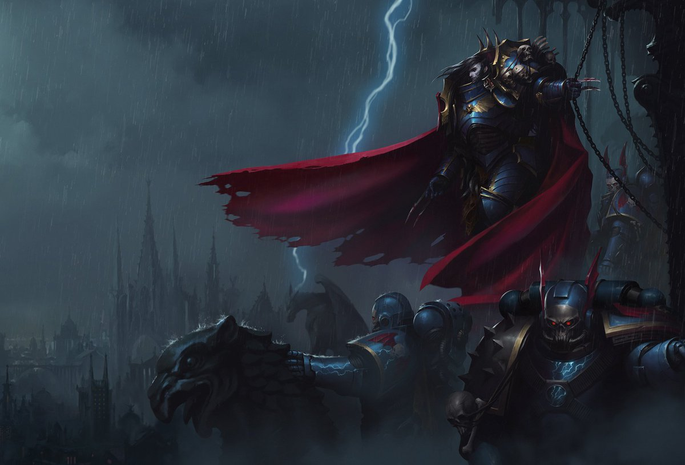

inicios
El Primero Lion El'Jhonson un hombre que nacio para ser rey
cuando el insidente en los laboratorios del emperados lanzo las capsulas de los primarcas
por todo la galaxia usando, la disformidad el reyno de infestado de demonios estos se abalanzaron sobre la capsula del pequeño Lion
buscando desesperadamente corromperlo para que se uniera a su bando susurrandole promesas de poder y gloria.
La Capsula del Leon se estrello conta el planeta Kaliba
Historia
kalinban

Era un planeta con espesos bosques donde se ocultaba las peores bestias
de la galaxia fisuras en la disformidad brindo a estos depredadores el poder de los demonios, no luchaban como seres hambrientos eran seres de pesadillas.
que desgarraban las almas de sus víctimas y el pequeño primarca desendio en la mitad de este laberindo de la muerte alejado de cualquier rastro de civilización totalmente solo
ante los poderes de los demonios, para su suerte kaliban tambien poseia vida Humana, la violenta vida en este lugar llevo a la creacion de ordenes llevadas por Tecno Caballeros
portando espadas de energia armaduras reforzadas por la vieja tecnologia del hombre y montando corceles modificados, más grandes, resistentes que un caballo normal.
luchando así desde hace decadas con esperanza de algún dia poder librar a kaliban de estas amenazas aun asi las ordenes se encontraban separadas por sus propias rencillas.
el mas grande de los caballeros en esta epoca era Sr. Luther luchaba valientemente para defender a los suyos.
Cuando se entero que una de las peores criaturas había mostrado su rastro tomo su arma y viajo con sus hombres para enfrentar y cuando llego quedo sorprendido cuando vio el cadaver.
De este ser completamente Descuartizado, una terrible pelea se había librado ahí y el responzable logro acabar solo con un demonio de Inmenso poder fue cuando entonces Luther lo vio,
Un joven sucio de largos cabellos dorados con un cuerpo lleno de heridas pero sus ojos los ojos eran de un verdadero depredador.
El sabia que estaba por encima de cualquier persona de kaliban fue entonces que Luther le dio su nombre
LION EL'JHONSON León hijo del bosque comprendiendo la fuerza y nobleza de aquel muchacho Luther se lo llevo para criarlo.
Desarrollo
Debio a que el El Emperador de la Humanidad les había dado a sus hijos los Primarcas una caracteriztica especial un don unico.
Lion El'Jhonson tenia un aura tan poderosa que tan solo estar con su presencia los humanos caian de rodillas aceptando cono su rey hablaba poco.
pensando friamente con una palabra fue asi que el Lion crecio para unificar las ordener de caballeros de Kaliban, Luther Debio haber sido el más grande guerredo de estos caballeros.
de su epoca.
En una muestra de verdadera Humildad el corazón de Luther no sintio envidia alguna solo orgullo de ver a su mundo unido y ser de los pocos que podia llamar amigo al León bajo sus ordenes de los primarcas se llevo a cabo una gran caseria,
rastreando a cada bestia y limpiando los bosques por primera vez estos ya no serian una amenza esto llamo la atencion del Emperador.
El cual personalmente fue a ver a su hijo Lion lo recibio con los brazos abiertos y como si supiese para lo que fue creado acepto servir a su padre si chistar se le dio el mando de su legión los Primero los angeles oscuros.
se volverian varios de los mejores espadachines de la galaxia bajo su mando las conquistas de el León eran incontables se dice que incluso los marines de otros primarcas debian recistir el incontrolable deseo de arrodillarse ante el además que sus hermanos.
lo encontraban muy intimidante era como estrar encerrado en una habitacion con un animal salvaje que no paraba de estudiarlos, como si escogiece la siguiente presa ante la herejia de Horus la guerra civil que dividio el Imperio Lion fue probado un multiples ocaciones,
tentado por los mismisimos dioses del caos quienes deseaban desesperadamente su caida quienes deseaban desesperadamente su caida ofreciendole.
Todo lo que pudiese desear pero este solo respondio
La lealtad es suficiente recompensa cazando a varios de sus hermanos traidores logro sobrevivir a la herejia pero al regresar al planeta kaliban se encontro con la sorpresa que,
Luther lo habia traicionado, los poderes del caos corronmpieron a este noble campeon el cual ahora se levantaba contra su viejo amigo ambos lucharon embrabecidamente tan terrible fue el enfrentamiento que el planeta se dividio,
por la energía disforme liberada explotando en miles de pedasos los angeles oscuros vieron a su padre desaparecer para siempre y además ya conocion que habían traidores entre sus filas algunos de ellos habían traicionado al imperio jurando cazarlos y no permitirian que esta verguenza sea conocida por nadie.
Tomaron el ultimo pedazo del planeta ahora solamente llamado la roca como base movil de operaciones lo que no sospechan es que antes de caer el Leon fue tomado por unas pequeñas criaturas conocidos como los vigilantes.
en la oscuridad quienes tomaron a un dormido Leon y lo ocultaron en las profundidades de la roca dejandolo dormir hasta el día que sea necesitado una vez más.
después de La Herejia de Horus
La medida de la verdadera gloria no es dar batalla en el brillante medio día de la guerra rodeado de valientes camaradas en el campo de la Victoria
Si no luchar valientemente solo en la oscuridad sin esperanza de ayuda
o incluso recuerdo y escupir
radiante en el ojo de la media noche